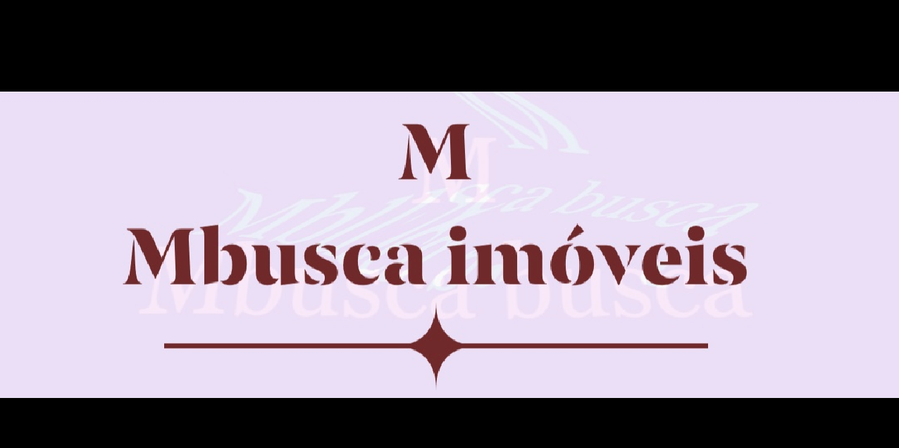

Nossa Empresa
A Mbusca é a mais nova imobiliária da cidade de Belo Horizonte unimos modernidade e transformamos sonhos em realizações.
Fundada em 2019 pela Sr. Marcela Cristyne, a imobiliária teve seu nome inspirado em seu primeiro nome.
Com seu crescimento administrativo, a empresa passou a contar com o apoio familiar, tornando o atendimento mais humano.
Expandindo-se por toda capital belorizontina resultou na abertura de uma filial no Centro da cidade. inovando mais uma vez,
a imobiliária criou uma nova divisão focada em imóveis de alto padrão, a Nova BH Gold.
Estar na Imobiliária Nova BH é sentir-se em casa. Aqui, diretores, colaboradores e parceiros têm o mesmo objetivo:
transformar os sonhos dos clientes em realizações. Por isso criamos relacionamentos tão duradouros.
Valorizamos nossa tradição e investimos constantemente na modernização de ferramentas administrativas e na qualificação da nossa equipe.
Parcerias fazem parte do nosso DNA.
A Nova BH é associada à Rede Random de Imóveis e certificada como empresa Correspondente pela Caixa Econômica Federal (CEF).
Venha nos visitar e descubra por que somos uma das mais tradicionais imobiliárias do centro de Belo Horizonte.
